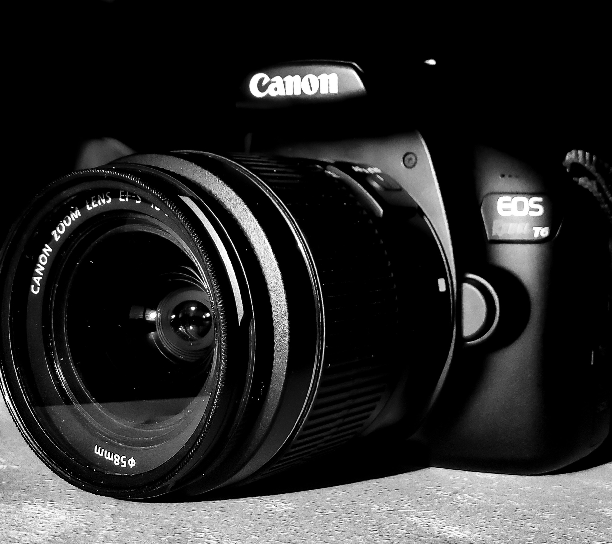

Equipo para fotografía
Para iniciarse en el mundo de la fotografía no se pide mucho, de hecho, la mayoría de las personas inician con la cámara de sus teléfonos celulares, como es mi caso. Empecé con la cámara de mi celular el cual era un gama baja, estoy hablando de un Moto E 1ra Generación, así que la cámara era muy.... Bueno. Otros inician con una cámara compacta y otros suben el escalon de comprar una DSLR directamente. No importa el modo, si no empezar a dedicarle tiempo, práctica, paciencia y pasión. Volviendo, lo que yo considero básico para empezar a generar ingresos con sesiones fotográficas es lo siguiente:

1- Evidentemente, una cámara con calidad al menos buena, no decente.
Hay fotógrafos profesionales que trabajan principalmente con la cámara de su teléfono, pero vaya, obviamente es un dispositivo al menos Gama Alta. Un buen ejemplo sería Nico Oppel, un maestro de la fotografía con el móvil. Claro, como dije anteriormente, usan al menos dispositivos como un iPhone de mínimo la generación pasada, lo mismo pasa con un Galaxy S o Galaxy Note. Hay otros casos donde se llegan a usar cámaras compactas, pero en mi caso, uso actualmente una DSLR, específicamente una Canon 1300D/T6, nada de Gama Alta, por el momento esto me es suficiente.
2- Objetivos, desde el 18-55mm hasta un Serie L de Canon.
Los objetivos, los ojos de nuestra cámara. Desde lo más económico y básico hasta lo más costoso y sofisticado. Los hay de todo, objetivos para fotografía macro*, objetivos para retratos, paisajes, fotografía nocturna... Para todo. El ejemplo más básico de un objetivo más que común y el que creo que todos obtenemos al momento de comprar nuestra primera DSLR es el famoso 18-55mm. El lente 18–55mm f/3.5-5.6 es un zoom de gran angular a teleobjetivo medio y su campo de visión equivalente a 35 mm es de 28.8–88 mm. Puede ser utilizado para fotografía macro y para fotografía a mediana distancia.
* “Macro” significa grande. La Macrofotografía es por lo tanto una rama de la fotografía en la que el sujeto fotografiado resulta “grande” en la foto, igual de grande que en la vida real o más grande. Por ejemplo si el tamaño de una hormiga en la foto es igual o más grande que su tamaño en la vida real, ésa es una foto Macro.

3- Tapitas, a que vas a perder más de una

Tener siempre tapitas extras de objetivos y de la montura de la cámara es un punto extra para cualquier fotógrafo, ya que, tienden a ser malvadas y perderse por andar de curiosas, o de igual manera, a veces estamos tan estresados y apurados por hacer el trabajo, que no las ponemos en su lugar al cambiar de objetivo y las perdemos de vista. No podemos permitirnos el lujo de dejar expuesto el sensor de nuestra DSLR ya que las partículas del polvo, basura y líquidos lo estropearían por completo, por eso, para el fotógrafo viajero le será muy útil llevar al menos un extra de esta tapita.
Nunca se sabe cuando se va a perder o romper una. Lo mismo pasa con las tapitas para la montura y lente de nuestro objetivo. El dejarlo expuesto a rayones, polvo y líquidos es como dejar a un bebé en una sala de tortura... O así lo es en mi imaginación, así que, si algo que he aprendido y que me ha salvado de varios apuros es tener tapitas extra de la montura de nuestra cámara y objetivos.
4- Baterías, para evitar perder el momento
Porque 860mAh de una sola LP-E10 no son suficientes para un par de horas de disparos, es altamente recomendable tener al menos un par extra de baterías, no necesariamente deben ser del mismo fabricante que hizo tu camara, si no que, hay otras marcas que incluso ofrecen el doble o hasta el triple de capacidad de batería, como es mi caso. Cuento con un par de baterías extras las cuales, cada una ofrecen el doble teórico de capacidad (1600mAh) a comparación de la batería que viene con la cámara (LP-E10).
Un par de baterías nos darán horas de duración y muchísimos disparos para terminar seguro un trabajo. Lo mismo va para las baterías de nuestro equipo de luz. Un par de baterías no le vendrían nada mal a tu panel LED o pantalla de luz, al igual que a tu flash. Demonios! Si tú te alimentas bien antes o durante, ¿Por qué tu equipo no? El es lo que te da o dará de comer.

5- Memorias, para que a tu cámara no sufra de Alzheimer
¿Te ha pasado, que en un evento disparaste tu cámara 100 veces y cuando quieres revisar el resultado, no hay nada? Pues ¡BOOM! Adivina quién no tenía una memoria puesta en la cámara, bueno, más bien, ¡Adivina quién tiene una cámara con Alzheimer! (Sólo para DSLR) Ó ese típico momento de frustración donde tu cámara lanza el aviso de "Memoria Insuficiente", Irritante, ¿No? Pues bien, para ello esta recomendación.
Es de sabios, okey no, pero es de ley llevar en la mochila memorias extra, al menos dos con una capacidad de almacenamiento considerable, todo depende de a que fotografía te dediques. Personalmente prefiero tener cuatro memorias de 64GB para dividir mis trabajos y/o escenas que una sóla tarjeta de 256GB ó 512GB, además, es preferible perder sólo una pequeña parte del trabajo a perder todo, ¿No? Por cierto, usar memorias de alta velocidad, al menos usar memorias clase 10, también es recomendable tener una copia de las fotografías en la nube o un HDD externo, uno nunca sabe :^)

6- Luz, desde paneles LCD hasta flashes inalámbricos.
¿Usar siempre una luz? Nel pastel. Las luces como las pantallas de luz o los flashes se usan principalmente para escenas oscuras y, dependiendo el entorno, se debe usar al menos un panel de luz y buscar otras fuentes de iluminación artificial que concuerden con la escena, de lo contrario se tendrá que usar más de un par de estos paneles, ¿Por qué? Pues para evitar sombras y zonas oscuras en nuestro primer plano. Entonces, ¿No pueden existir sombras ni zonas oscuras? Claro que sí, y ese es un estilo bellísimo de fotografía, mayoritariamete usado con filtros B&W, todo depende de la imaginacion e integrar bien a nuestro primer plano con el entorno y la luz.